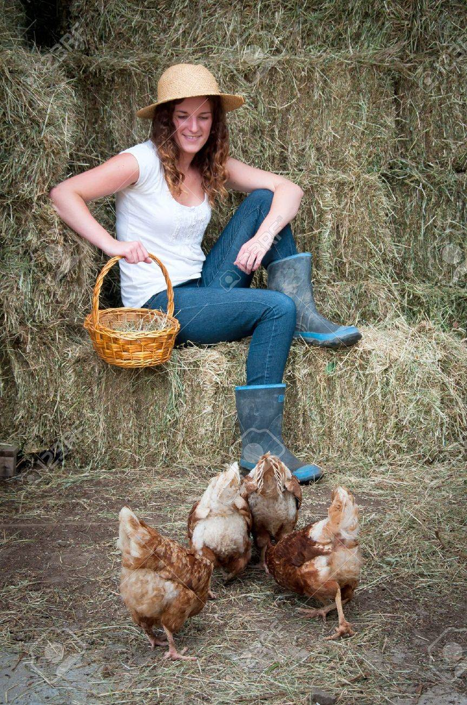

Farmer Jane

Description
This is a hot dog that isn't a hot dog. If red meat gives you the sweats, you'll want to find comfort in the arms of Farmer Jane.
Ingredients
- Chicken Sausage
- Asparagus Hash
- Stone Ground Mustard
Steps
- Grill chicken sausage to your liking.
- Toast bun to your liking.
- Make asparagus hash. Should be easy.
- Grind the stone into the mustard and put on top of the sausage, to taste.